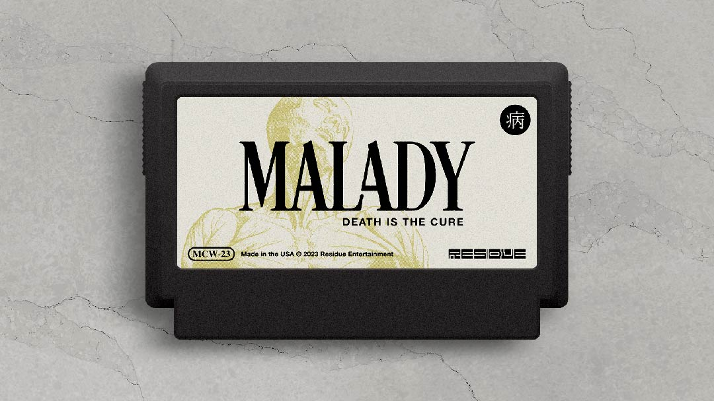
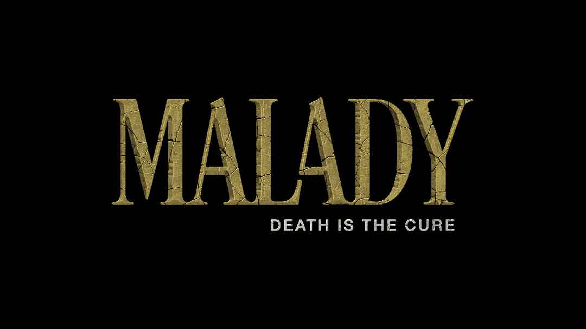
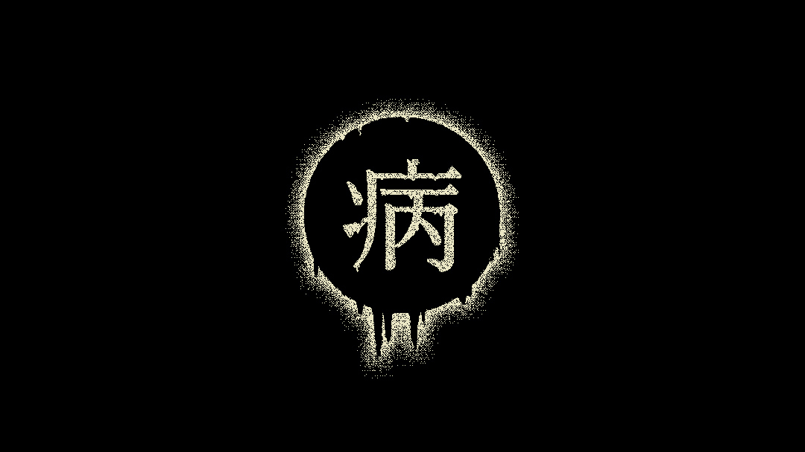
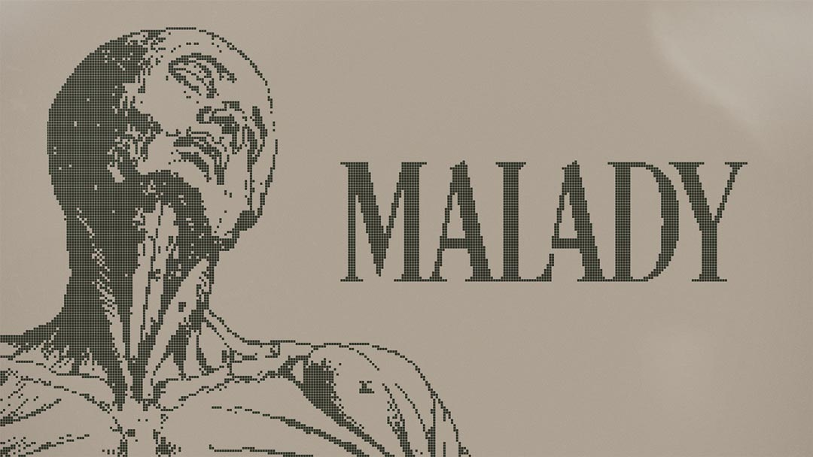

← Return to Homepage — Malady

MALADY 病 — Famicase 2023
I’m extremely excited to be participating in Famicase 2022! If you’re unfamiliar, Famicase is an annual exhibit in Tokyo that displays fan-made Famicom cartridges designed by people from all over the world. It’s an overlap of my two biggest interests: graphic design and retro video games. I’ve been following the exhibit for a long time and finally submitted a design this year:
A terrible sickness has fallen upon your village. Yet, you’ve been cursed with a worse fate: immunity. What lengths will you take to contain the outbreak?
Genre: Horror, Action, Dark Fantasy

The logo uses Desire Pro. Which, honestly carries most of the weight here. But I did make the “LA” ligature, which I think looks very nice.

The label itself is an homage to (ripoff of) Tenjin Kaisen for the Game Boy. An amazing cover! The illustration is a public domain image from FreeVintageIllustrations.com. It’s an anatomy illustration, but reminds me of Catholic art. Anguish, agony, etc.

I envision MALADY to be a medieval horror game. Essentially a zombie game — but with Guilt Mechanics™ — as every “enemy” is someone you knew before they turned. Maybe each defeat comes with a sad story. Definitely one of those games that makes you feel bad for playing.

The overall goal is to contain the spread of the mysterious sickness and potentially find out why you are immune. Maybe there are ways to stop the spread, beside the sword. But maybe death is the only cure.
Will you survive and what will be left of you?
Exhibit & Catalog
01. Famicase 2023 Exhibit ↗
02. Famicase Catalog (US) ↗
03. Famicase Catalog (JP) ↗
Social Media Links
01. METEOR Tweet ↗
02. My Twitter Thread ↗
03. Famicase on Instagram ↗
04. Capsule Corner × Famicase ↗
References
01. Desire Pro ↗
02. Tenjin Jaisen ↗
03. Anatomy Illustration ↗
Credits
The two photographs on this page are from the @club_meteor ↗ Twitter account.